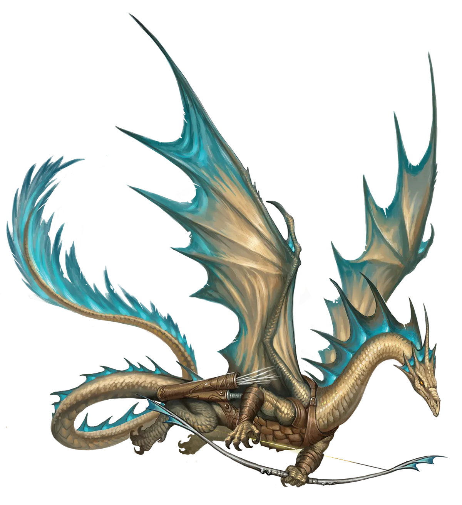
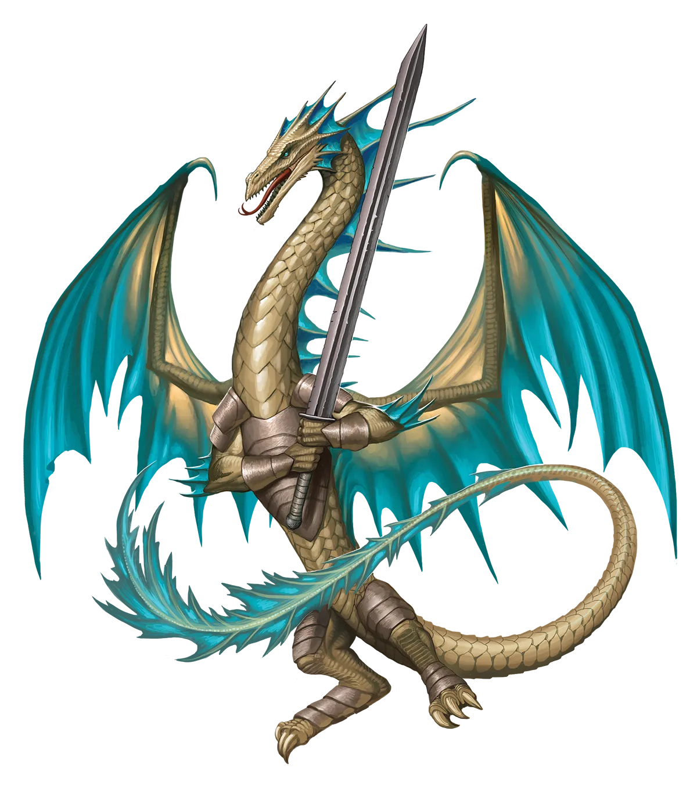

次级学者
与类人生物相比，青铜龙堪称杰出的学者，但他们的学识深度永远无法与绿龙相提并论。这并非他们的过错，而是其世界观所致。由于自视为知识的守护者与保管者，他们便注定了自己的命运。学问并非被动地收藏，它需要积极与世界互动、提出理论并加以验证。
青铜龙 Bronze Dragon |
|
|
青铜龙是进行永恒之光仪式可能性最高的金属龙之一，正如它们也最有可能与短命种族的纷争纠缠在一起。的确，青铜龙天生倾向于过一种隐修学问、护卫或看守重要场所的生活。然而，无论持有何种理念――永恒派或传统派――青铜龙都无法抗拒正义任务的召唤，会加入他人一同完成。这种矛盾正是促使它们进行永恒之光仪式的原因。如果当前形态下的它们无法胜任某项任务，它们可能需要更快地增长魔法力量，依靠盟友在仪式后遗症的早期阶段保护它们。传统派青铜龙在仪式后很少以异样的眼光看待永恒派同伴。各自都有自己应走的道路和应发现的真理。虽然青铜龙更常见的是在一项要求甚高的伟大任务开始时进行永恒之光仪式，但这样的故事也有许多变体。有些青铜龙在未举行仪式的情况下踏上征程，却在途中为了拯救自己或冒险同伴的生命而进行仪式。在这种情况下，这条青铜龙可能并不比传统派更偏好永恒派的生活方式，但它选择了接受，而不是任由一条生命逝去。 许多其他龙类都是先举行仪式，再寻找冒险团队和任务，而永恒派青铜龙则更倾向于事先就找到值得投身的事业和志同道合的盟友群体。传统派金属龙与色彩龙通常势不两立，但众所周知，永恒派青铜龙与永恒派绿龙却会因为对学问与知识共同的热烈爱好而结成羁绊。然而，如果这两条龙在某个对双方都至关重要的话题上各自支持相互对立的学术理论，这份友谊便可能迅速演变成一场激烈的争论。幸运的是，与两条绿龙之间可能发生的类似紧张局面不同，当青铜龙冷静下来并道歉时，事态往往会缓解（而绿龙则不太可能这么做）。青铜龙倾向于选择那些能让他们收集奇闻异闻的职业，如吟游诗人、魔契师和法师，或是能让他们最简单直接地保护他人的职业，如圣武士。作为冒险队伍的一份子，他们常常协助研究和策划团队的下一步行动，同时丰富和巩固队伍的大本营。即使队伍远行他乡，青铜龙成员也通常会试图说服团队拥有一个可称之为“家”的地方的重要性――在危险的旅途之后，他们可以回到那里，获得安全与放松。 次级学者 与类人生物相比，青铜龙堪称杰出的学者，但他们的学识深度永远无法与绿龙相提并论。这并非他们的过错，而是其世界观所致。由于自视为知识的守护者与保管者，他们便注定了自己的命运。学问并非被动地收藏，它需要积极与世界互动、提出理论并加以验证。 青铜龙特质 Bronze Dragon Traits 你出身于一脉坚毅博学、守护古老学识的青铜龙世系。 |
  |